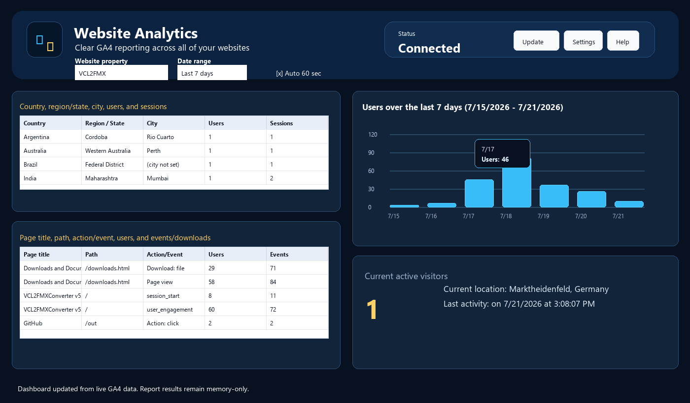

Dashboard Tour

Hero section
- The top section shows the app title, current connection state, Update, Settings, and Help.
- Connected means the app currently has a usable in-memory Google access token. Not connected means the app needs authorization or has not refreshed yet.
Filters
- Website property selects which GA4 property is requested.
- Date range controls the report period: Today, Last 7 days, Last 28 days, Last 90 days, or This year.
- Auto update 60 sec refreshes data while the app is connected and left running.
Four quadrants
- Upper-left: where visitors came from, grouped by country, region/state, city, users, and sessions.
- Lower-left: what visitors used, including page title, path, action/event, users, and events/downloads.
- Upper-right: users over the selected date range as a bar graph.
- Lower-right: current active visitors, current location, and last activity.